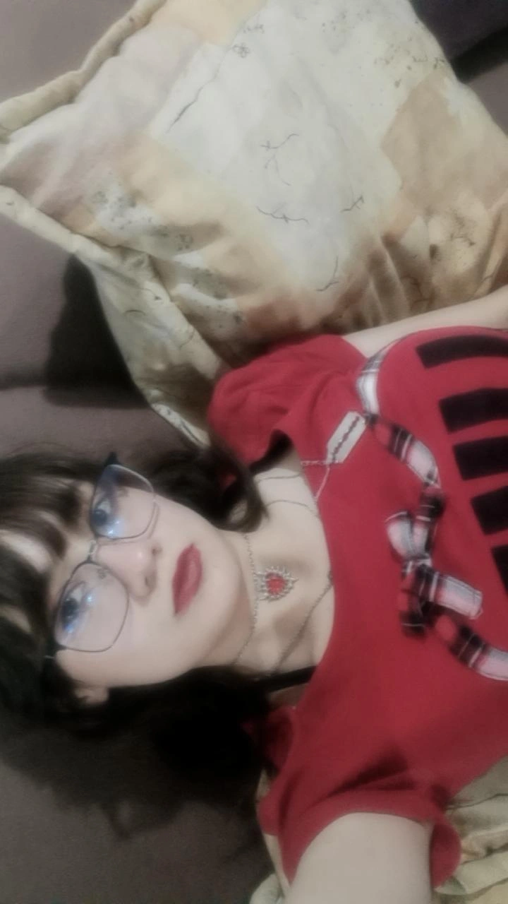

Soy Regina estudiante de artes de la Universidad Autónoma Metropolitana donde cursó la carrera de Artes y Comunicaciones Digitales, y me gusta mucho la música y la mayoría de expresiones del arte, me gusta expresar los sentimientos dentro del arte, analizar las problemáticas de la sociedad y darles una visibilidad con el arte que me gustaría crear. Yo creo que el arte puede ser un gran medio para dejar salir tu creatividad, pero también tus sentimientos y emociones. En este portafolio estaré mostrando parte de mis creaciones artísticas y dentro de ellas irán pequeñas partes de lo que yo soy, porque yo creo que el arte que creamos puede tener un poco de nuestra esencia y eso lo vuelve más significativo.